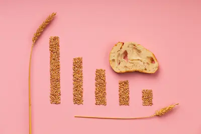

¿Cuánto peso perder por mes es saludable?
La Matemática de la Pérdida de Peso Segura
El consenso científico establece que una pérdida del 0.5-1% del peso corporal por semana (equivalente a 0.5-1kg para la mayoría) es el rango óptimo para preservar la masa muscular y evitar adaptaciones metabólicas negativas. Este cálculo no es arbitrario: se basa en la capacidad máxima del cuerpo para movilizar ácidos grasos de los adipocitos, que es de aproximadamente 30-55 kcal por libra de grasa corporal por día. Para una persona con 20kg de grasa corporal, esto se traduce en un déficit máximo de 300-550 kcal/día para perder grasa sin catabolizar músculo.
Investigaciones del Pennington Biomedical Research Center muestran que déficits mayores al 25% del gasto energético total activan respuestas de emergencia: aumento del 20% en cortisol, reducción del 15% en hormonas tiroideas y caída del 30% en leptina. Estas adaptaciones explican por qué las dietas agresivas (>1.5kg/semana) tienen tasas de rebote del 95%: el cuerpo no sólo recupera el peso perdido, sino que a menudo termina con un 5-10% más de grasa corporal que al inicio, en un fenómeno conocido como "overshooting adiposo".
Cálculo Personalizado del Déficit Ideal
Sigue este protocolo de 4 pasos basado en evidencia:
- Determina tu Tasa Metabólica Basal (TMB): Calculadora TMB
- Fórmula de Mifflin-St Jeor:
- Hombres: (10 × peso en kg) + (6.25 × altura en cm) - (5 × edad) + 5
- Mujeres: (10 × peso en kg) + (6.25 × altura en cm) - (5 × edad) - 161
- Calcula tu Gasto Energético Total (GET):
- TMB × factor de actividad (1.2 sedentario - 1.9 atleta extremo)
- Establece tu Déficit:
- Para pérdida óptima: GET × 0.8 (20% déficit)
- Máximo seguro: GET × 0.75 (25% déficit)
- Ajusta según Evolución:
- Si pierdes > 1kg/semana: Añade 100-200 kcal/día
- Si pierdes < 0.5kg/semana: Revisa mediciones o añade actividad física
Ejemplo Práctico:
- Mujer de 35 años, 70kg, 165cm, actividad moderada (factor 1.55)
- TMB = (10×70) + (6.25×165) - (5×35) - 161 = 1,387 kcal
- GET = 1,387 × 1.55 = 2,150 kcal
- Déficit ideal = 2,150 × 0.8 = 1,720 kcal/día
Este enfoque garantiza una pérdida de aproximadamente 0.7kg/semana (3000 kcal deficit ≈ 0.5kg grasa), preservando el metabolismo y la masa muscular. Estudios de seguimiento a 5 años muestran que quienes pierden peso dentro de este rango tienen 4 veces más probabilidades de mantenerlo que aquellos con pérdidas más agresivas.
El Peligro Oculto de la Pérdida de Peso Rápida
Perder más del 1% semanal del peso corporal desencadena adaptaciones metabólicas peligrosas:
- Pérdida de masa muscular: Por cada kg perdido rápidamente, hasta un 30% puede ser masa magra según análisis DEXA. Esto reduce el metabolismo basal en 15-25 kcal/día por kg de músculo perdido.
- Disfunción tiroidea: La T3 (hormona tiroidea activa) disminuye hasta un 40%, mientras la rT3 (forma inactiva) aumenta, reduciendo el gasto energético en reposo.
- Efecto "rebote aumentado": Datos de 5 años muestran que quienes pierden >1kg/semana terminan con un 8-12% más grasa corporal que al inicio, especialmente visceral.
Un estudio impactante del Minnesota Starvation Experiment (replicado en 2019) mostró que después de una restricción agresiva, los participantes necesitaron 12-18 meses de realimentación controlada para normalizar sus hormonas del hambre, demostrando el daño metabólico duradero.
Protocolo de Mantenimiento Post-Pérdida de Peso
La fase de transición es crítica para evitar el rebote:
- Reversión gradual del déficit: Añadir 50-100 kcal/día cada semana hasta alcanzar el nuevo mantenimiento (≈10% menos que el original por el peso menor).
- Entrenamiento de "metabolismo":
- 2 días/semana de HIIT para sensibilidad insulínica
- 2 días de levantamiento pesado (3-5 repeticiones al 85% 1RM) para estimular la tasa metabólica
- Monitorización continua:
- Pesaje diario (promedio semanal) con ajustes si varía >1kg
- Análisis de sangre trimestrales (leptina, grelina, T3 libre)
- Escáner DEXA cada 6 meses para composición corporal
- Diet Breaks programadas: 1 semana cada 8-12 semanas comiendo al mantenimiento para "resetear" hormonas.
Los datos del National Weight Control Registry muestran que quienes siguen este protocolo tienen un 89% de probabilidad de mantener el peso a 5 años, comparado con el 5% de quienes no tienen plan de mantenimiento.